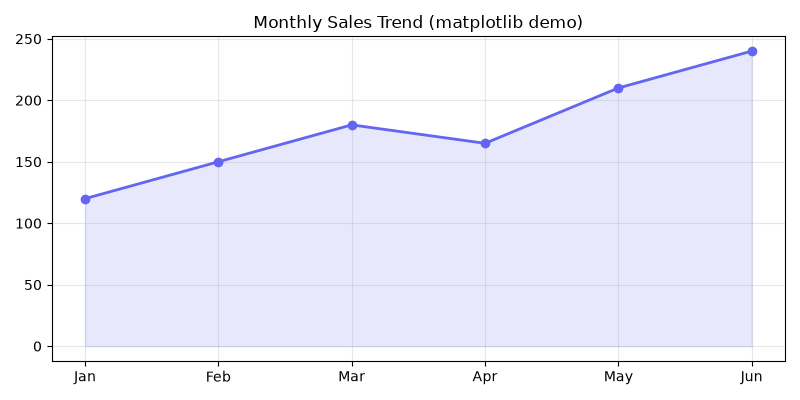

AI 生成图片（GenerateImage 工具）
代码生成图表（Python + matplotlib）

内置工具一览（25 个）
文件操作
Write · Read · Edit · DeleteFile · LS
搜索
Glob · Grep
终端
RunCommand · CheckCommandStatus · StopCommand
网络
WebSearch · WebFetch
AI 生成
GenerateImage
智能体与扩展
Task · Skill · run_mcp
用户交互
AskUserQuestion · NotifyUser · OpenPreview
任务管理
TodoWrite · Schedule · goal 系列
本次演示的文件格式
txtmdjson
yamltomlini
csvtsvxml
htmlcssjs
tspysh
sqlgors
javaccpp
svgenvDockerfile
Makefilegitignore
xlsxpptx
docxpdf
pngwav
sqliteparquet
zip